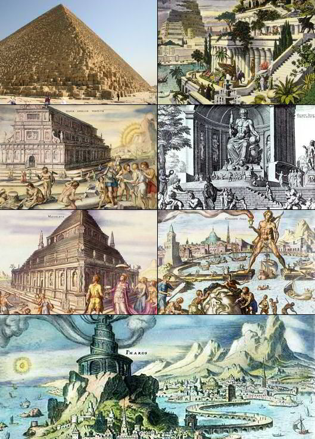

Septyni pasaulio stebuklai – garsiausi antikinio pasaulio statiniai, kurių sąrašą sudarė Antipatras iš Sidono II аmžiuje pr. m. e. Vėliau, plečiantis oikumenai ir pasaulio pažinimui, sąrašas ne kartą plėstas, įtraukiant taip pat ir gamtos stebuklus. Tačiau tradicinis pasaulio stebuklų sąrašas yra toks:
©Dain's Studio